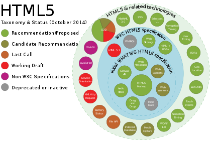

HTML 5
HTML5 is a markup language used for structuring and presenting content on the World Wide Web. It is the fifth and final major HTML version that is a World Wide Web Consortium (W3C) recommendation. The current specification is known as the HTML Living Standard. It is maintained by the Web Hypertext Application Technology Working Group (WHATWG), a consortium of the major browser vendors (Apple, Google, Mozilla, and Microsoft).
HTML5 was first released in a public-facing form on 22 January 2008, with a major update and "W3C Recommendation" status in October 2014. Its goals were to improve the language with support for the latest multimedia and other new features; to keep the language both easily readable by humans and consistently understood by computers and devices such as web browsers, parsers, etc., without XHTML's rigidity; and to remain backward-compatible with older software. HTML5 is intended to subsume not only HTML 4 but also XHTML 1 and DOM Level 2 HTML.
Features and APIs
The W3C proposed a greater reliance on modularity as a key part of the plan to make faster progress, meaning identifying specific features, either proposed or already existing in the spec, and advancing them as separate specifications. Some technologies that were originally defined in HTML 5 itself are now defined in separate specifications:
- HTML Working Group – HTML Canvas 2D Context;
- Web Apps Working Group – Web Messaging, Web workers, Web storage, WebSocket, Server-sent events, Web Components (this was not part of HTML 5, though); the Web Applications Working Group was closed in October 2015 and its deliverables transferred to the Web Platform Working Group (WPWG).
- IETF HyBi Working Group – WebSocket Protocol;
- WebRTC Working Group – WebRTC;
- Web Media Text Tracks Community Group – WebVTT.


{kind=link}